Configurazione Tastiera: tasti funzione e tasti articolo
Target: tecnico installatore / rivenditore.
Obiettivo
Assegnare una funzione o un articolo a un tasto della tastiera della bilancia, usando la pagina Configurazione Tastiera, e conoscere le funzioni disponibili per i tasti.
Prerequisiti
- Gli Articoli PLU da collegare sono stati creati.
- Il Tipo Tastiera scelto nella Configurazione Operativa è RETAIL => 4 Operatori (o una variante Retail).
Come funziona
Su una bilancia appena programmata la schermata di vendita non mostra nessun tasto assegnato: la tastiera è vuota. Ogni posizione, però, riporta in alto a sinistra il proprio codice (per esempio 9001, 9003, 9004): quel numero è il codice del tasto da usare nella configurazione.
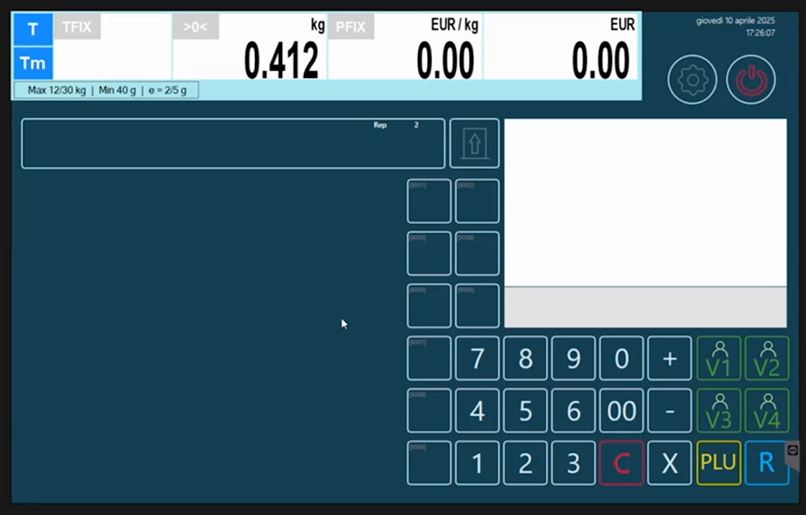
Procedura
1. Apri Configurazione Tastiera
Dal menu Setup Bilancia, sezione Configurazione, tocca Configurazione Tastiera.
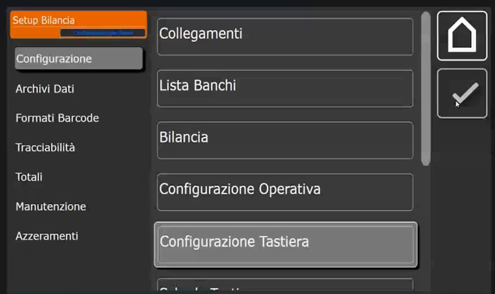
La lista dei tasti è vuota. Le colonne sono ID, Condivisione, Tipo, Valore e Codice Breve, e a destra c'è il pulsante +.
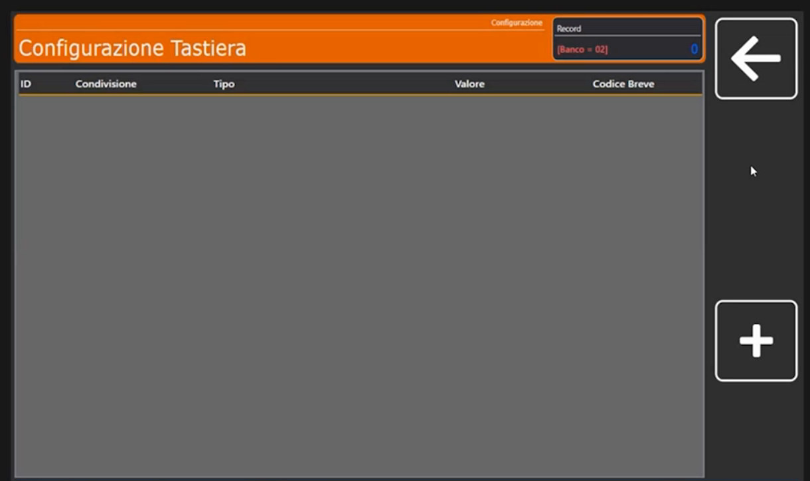
2. Crea un tasto funzione: ricerca alfanumerica (9001)
- Tocca + e digita l'ID Tasto 9001, cioè il codice che la posizione scelta riporta sulla schermata di vendita.
-
Si apre il tastierino Condivisione ( 0=Banco NN=Bilancia ). La pagina indica sempre se la programmazione vale per banco o per la singola bilancia, come nella pagina Bilancia. Digita 0 per il banco.
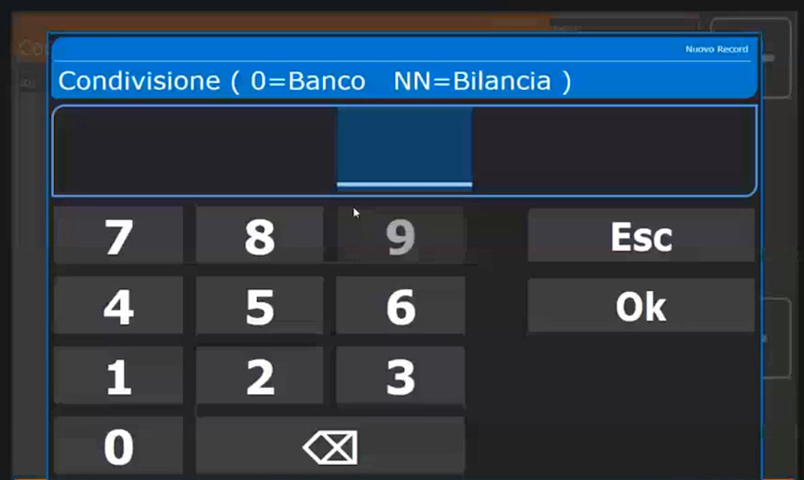
-
Nella scheda Configurazione Tasto i campi sono ID Tasto, Condivisione, Tipo Tasto e Valore Associato.
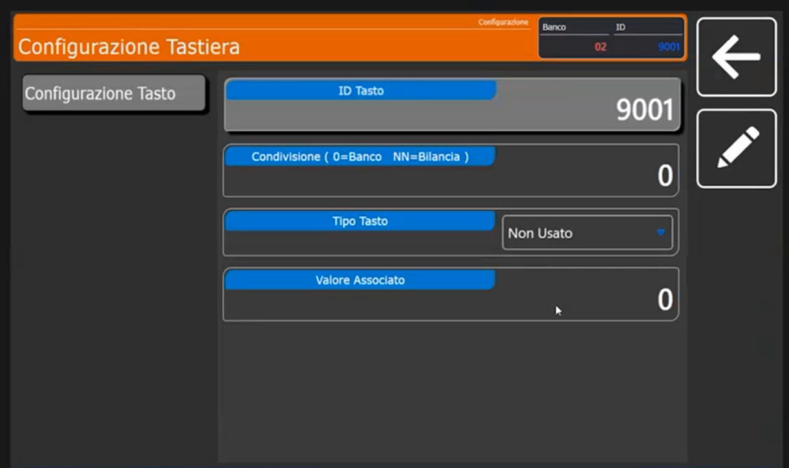
-
Apri il menu a tendina Tipo Tasto: qui si dice che tipo di funzione deve essere. Nella prima parte dell'elenco compaiono Non Usato, Codice PLU, Valore Tara (in g), Codice Operatore, Scelta Reparto, Imposta Reparto, PLU => Ricerca Alfa, Self Service <=> Etichettatrice, Multi Pesata <=> Etichettatrice e Ristampa.
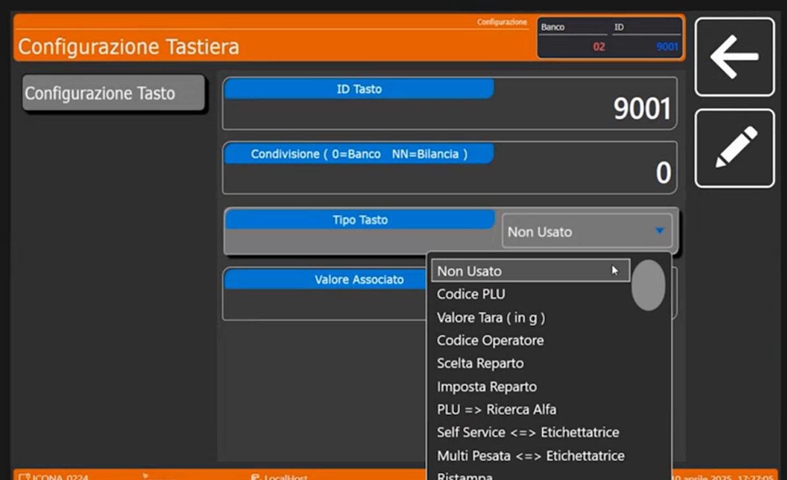
-
Scegli PLU => Ricerca Alfa, cioè la ricerca alfanumerica degli articoli PLU. Il primo tasto funzione è creato.
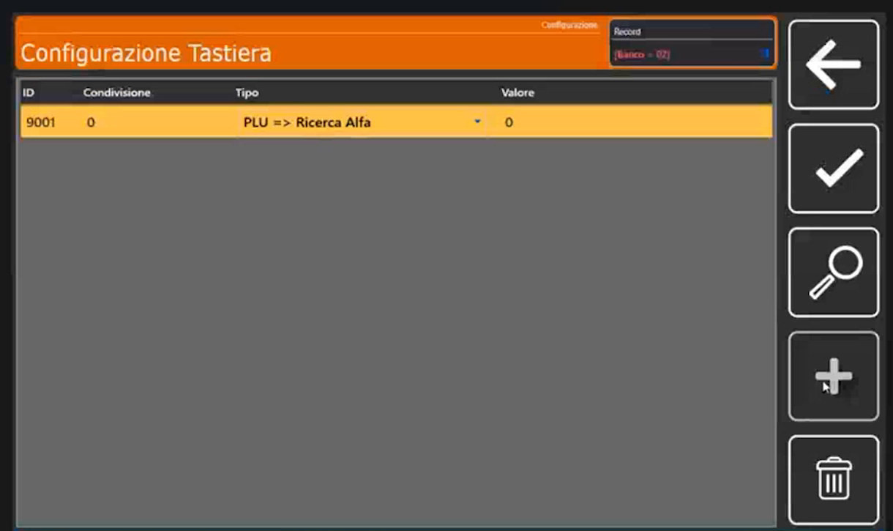
3. Crea un tasto funzione: pulizia del touch (9002)
Crea un altro tasto: 9002, anche questo per banco (Condivisione 0). Scorrendo l'elenco del Tipo Tasto si trovano altre funzioni: Lotto Generico, Elimina Code, Imposta Coda, Ripeti Coda, Barcode, Invio Scontrino a ECR, Apertura Cassetto, Sconto %, Sconto su Totale % e Testo Manuale.
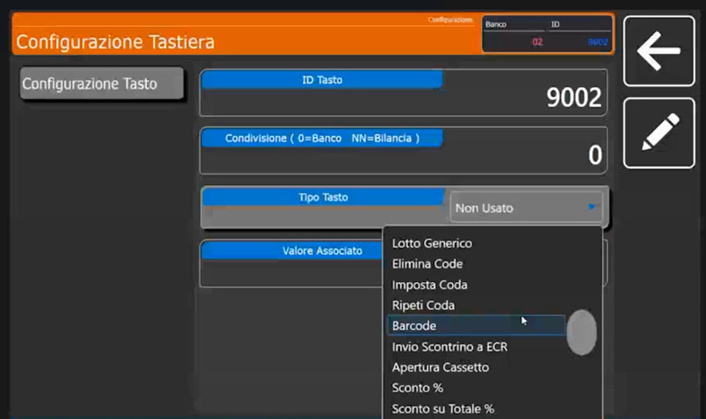
Scegli Pulizia Touch e come Valore Associato imposta i secondi di disattivazione: nell'esempio 10.
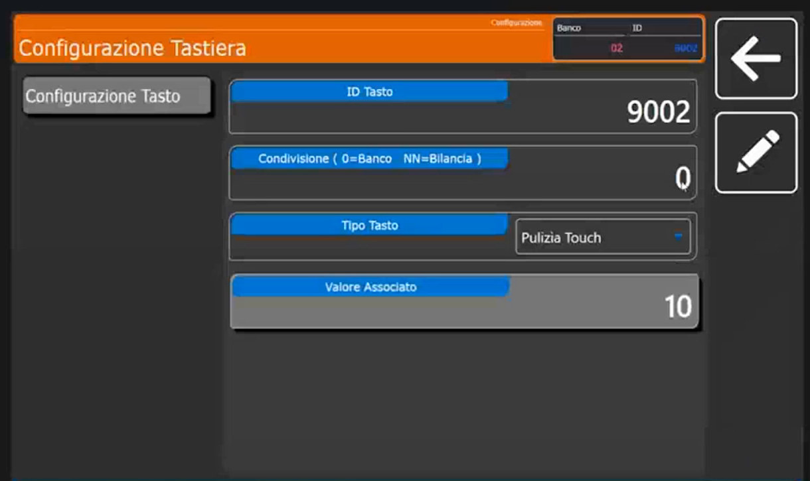
A cosa serve Pulizia Touch
È molto utile in ambienti come la macelleria, dove serve pulire lo schermo: il tasto disabilita momentaneamente il touch per i secondi impostati, così si dà una pulita rapida allo schermo.
4. Crea i tasti articolo
- Tocca +, digita l'ID Tasto 1, Condivisione 0 (sempre per banco).
- Come Tipo Tasto scegli Codice PLU: il tasto richiama un articolo.
-
Imposta il Valore Associato 1 (il codice del PLU da collegare) e il Codice Breve 1.
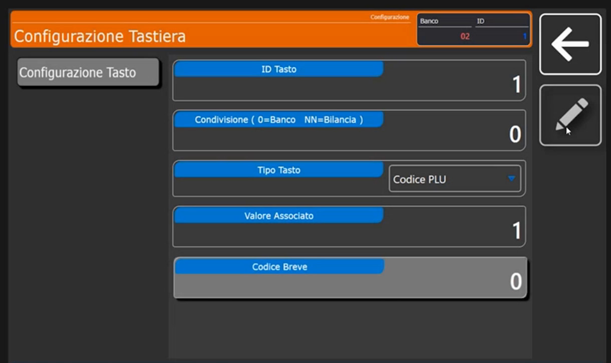
-
Ripeti per gli altri tasti, sempre per banco e sempre Codice PLU, con il rispettivo Valore Associato e Codice Breve.
Funzioni dei tasti più usate
| Funzione (Tipo Tasto) | Che cosa fa | Pagina di riferimento |
|---|---|---|
| Codice PLU | Richiama un articolo | questa pagina |
| PLU => Ricerca Alfa | Ricerca alfanumerica degli articoli | questa pagina |
| Pulizia Touch | Disabilita il touch per i secondi indicati | questa pagina |
| Multi Pesata <=> Etichettatrice | Commuta tra Multipesata ed etichettatura | Etichettatura in vendita |
| Self Service <=> Etichettatrice | Commuta tra Self Service ed etichettatura | Configurazione Operativa |
| Invio Scontrino a ECR | Stampa lo scontrino sul registratore di cassa collegato | Bilancia (Parametri ECR) |
| Testo Manuale | Inserisce un testo libero sull'etichetta | Etichettatura in vendita |
| Lotto Generico | Gestione del lotto | Tracciabilità e lotti |
| Sconto %, Sconto su Totale % | Sconti manuali | |
| Barcode, Apertura Cassetto, Ristampa | Funzioni di servizio |
Verifica
La lista dei tasti contiene le righe create (per esempio 1, 9001 e 9002).
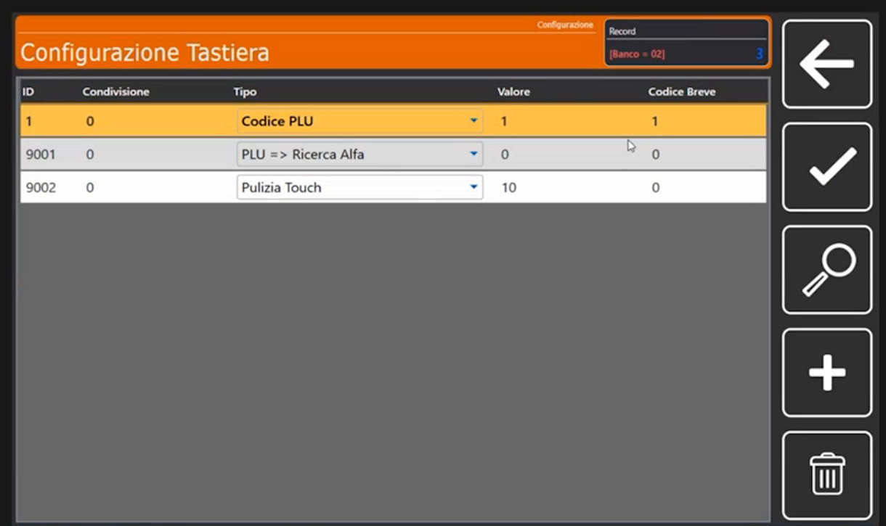
Esci dal configuratore e torna in vendita: compaiono gli articoli collegati alle posizioni e i tasti funzione appena creati.
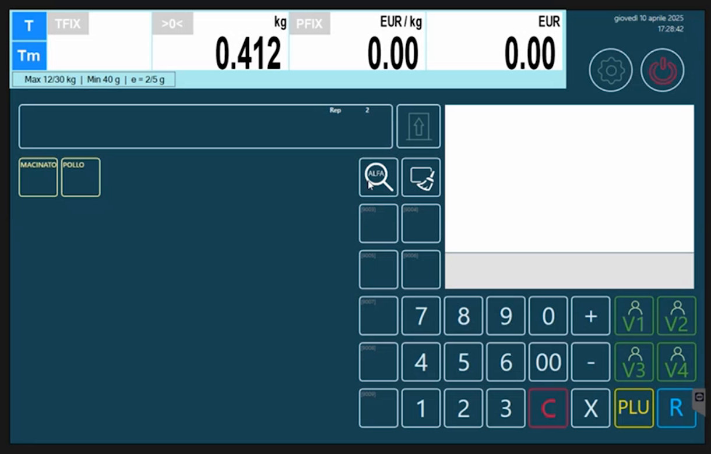
Errori comuni
| Problema | Causa probabile | Rimedio |
|---|---|---|
| Il tasto creato non compare in vendita | ID Tasto diverso dal codice della posizione | Controlla il codice mostrato sulla posizione, in alto a sinistra |
| Il tasto vale solo su una bilancia | Condivisione impostata con un numero di bilancia | Usa 0 per valere per tutto il banco |
| L'articolo non compare dopo il tasto | Valore Associato non corrisponde al codice PLU | Verifica il codice dell'articolo |
Prossimo passo
Per non mostrare tutti gli articoli nella stessa schermata si attivano le schede: Schede Tastiera.